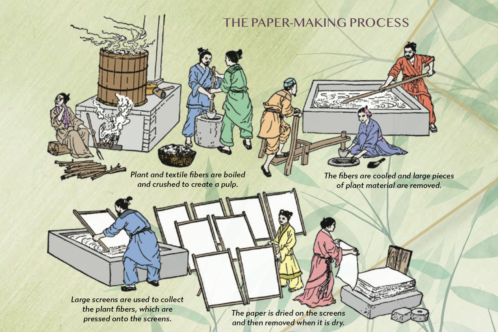

GOAL: Gibbs Smith Education produces large-format history and geography textbooks for students. These books contain dense educational content that must remain academically accurate while also being visually engaging and accessible for younger readers. Each title requires hundreds of pages of carefully structured layouts, visual aids, and production-ready files to ensure accuracy when sent to print.
ROLE: I led the design and production of six full-length textbooks, guiding each project from early layout development through final print preparation. I collaborated closely with writers, editors, and curriculum developers to translate complex educational material into clear, engaging visual layouts that supported student comprehension.
PROCESS: Working within a collaborative editorial workflow, I developed structured page systems using robust paragraph and object styles to ensure consistency across entire programs. I designed custom infographics, maps, and illustrations to clarify key concepts and reinforce the learning experience. I also restored and colorized archival photographs in Photoshop, bringing historical imagery to life for modern readers. Throughout production, I maintained rigorous attention to detail to ensure files were print-ready and aligned with the publisher's design and educational standards.
OUTCOME: Six textbooks were successfully delivered from concept to print, each combining clear visual hierarchy with engaging educational design. The systems and visual assets I developed helped translate complex subject matter into layouts that were accessible and engaging for middle-grade students.
